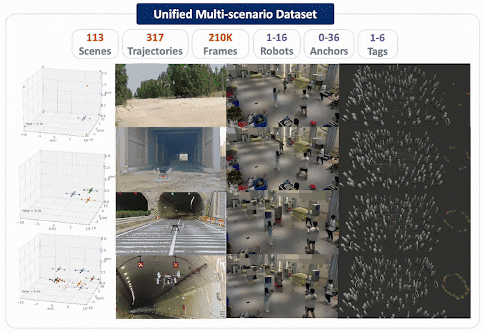

RSS 2026
AnyAmber: A Generalist for Versatile Anonymous Bearing and Range Based Position Tracking
A generalist neural framework for anonymous bearing and range based position tracking across different robot numbers, anchor configurations, UWB layouts, and observation settings.